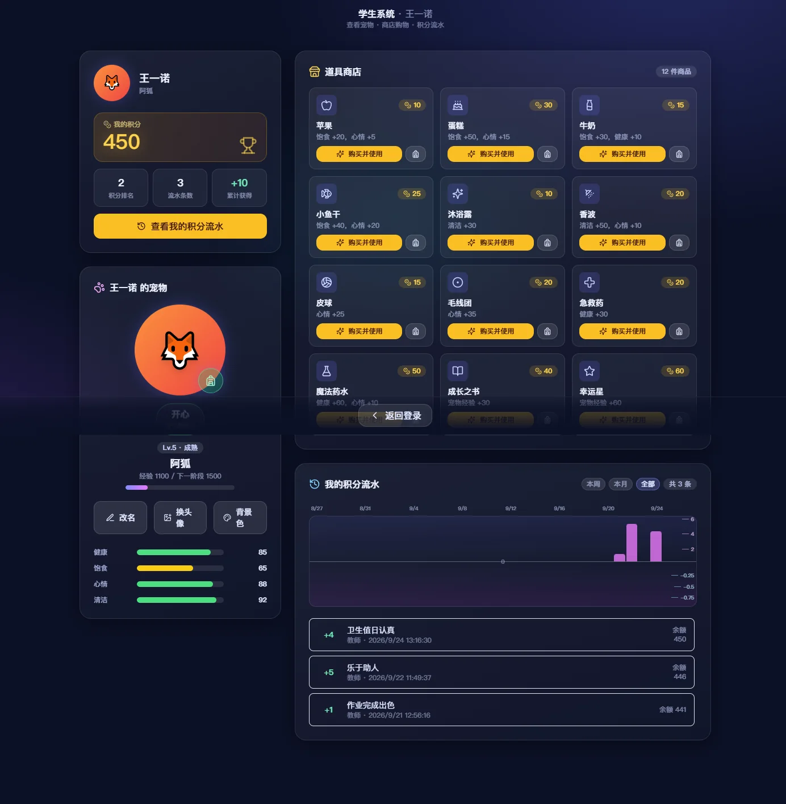
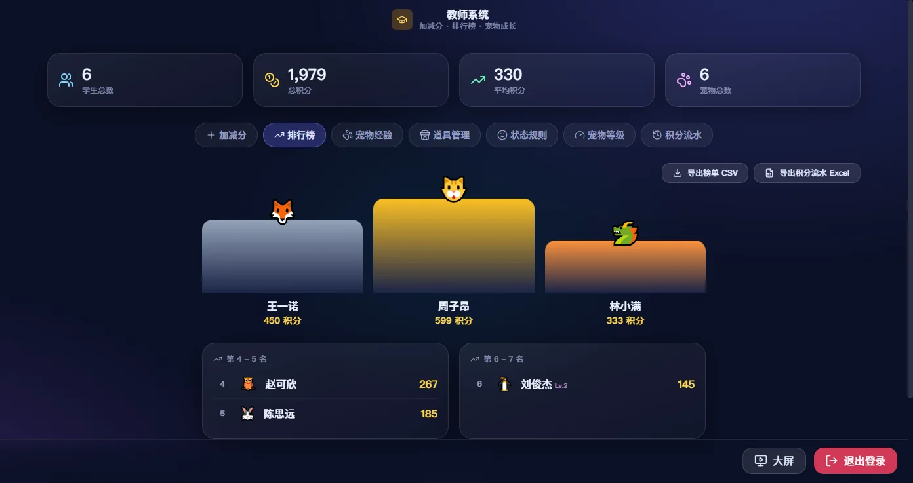
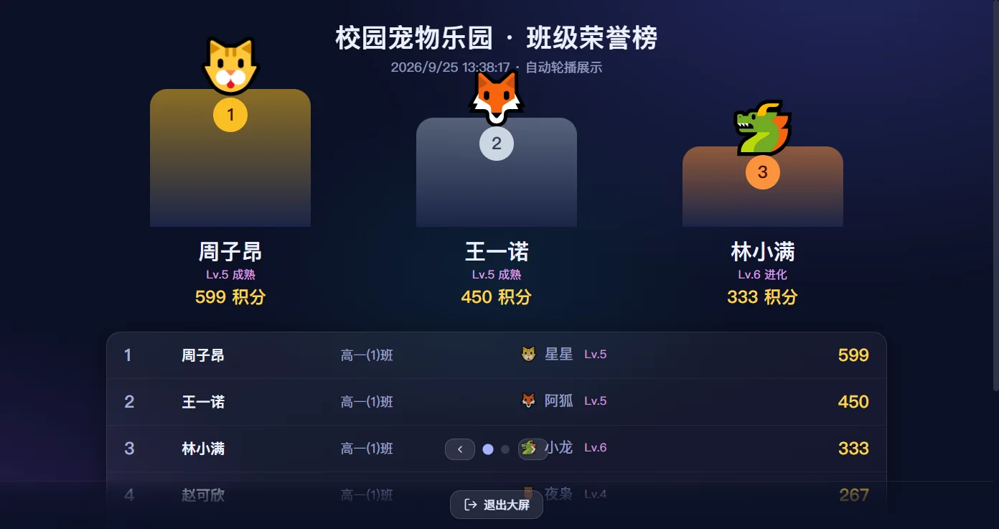
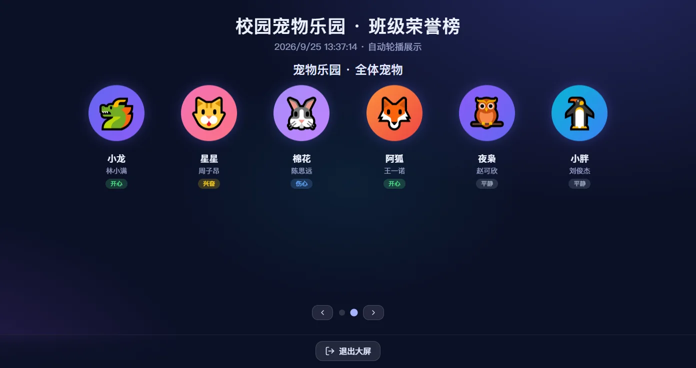
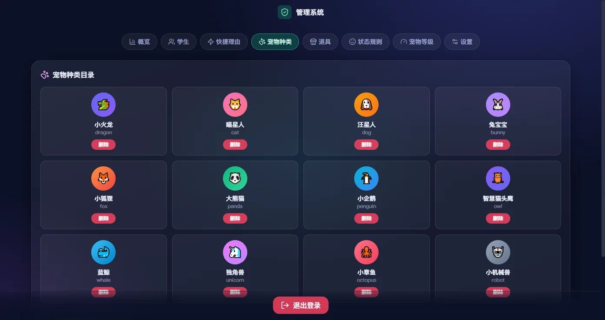

Windows 安装器
推荐下载 ClassroomPetSystem-Setup-0.4.28.exe，双击安装。
- 安装向导里选入口：
start.exe（默认，带依赖进度条）或start.bat，桌面快捷方式跟着选择走 - 装到
%LOCALAPPDATA%\CampusPetParadise，不需要管理员权限 - 升级安装器不会删掉
node_modules和server/data，学生数据、密钥、依赖都留着
班级激励系统 · v0.4.28 · 面向学校一体机
教师加减分，学生养宠物。分数喂出来的宠物会饿、会困、会闹脾气——比屏幕上多一个数字更容易让人上心。
学生端、教师端、管理端三合一。装在一体机上，断网也能跑。

积分
点学生、挑分值、选理由、确认。四步之内完成一次加减分。
宠物
宠物有健康、饱食、心情、清洁四条属性，随时间往下掉。掉到哪条线，状态就换一个。
状态规则按属性阈值判定，哪条先满足就用哪条——阈值和顺序都能在管理端改。宠物头顶冒出一句当天的心情，点一下会蹦出表情。
12 种宠物各自带配色。学生自己挑种类、自己起名、自己传头像，图片自动裁成圆形，也能单独设置头像底色。
荣誉
排行榜前三名上台领奖。大屏模式自动轮播荣誉榜、宠物墙和积分趋势，一体机全天开着不用管。



数据安全
同步是为了多台设备共享，但任何一步都不允许静默覆盖。
server/data/backups/snapshot-*.db，按总字节上限保留，默认 1 GB，至少留最近 2 份。server/data/config.json；管理员密码 bcrypt 哈希；token 签名密钥首次启动随机生成。配置方法见 云端同步教程。
部署
两条路：装安装器，或者直接拷目录。
下载 ClassroomPetSystem-Setup-0.4.28.exe，双击安装。
start.exe（默认，带依赖进度条）或 start.bat，桌面快捷方式跟着选择走%LOCALAPPDATA%\CampusPetParadise，不需要管理员权限node_modules 和 server/data，学生数据、密钥、依赖都留着开发机构建一次，整个目录拷到一体机。
start.bat 或 start.exe，浏览器打开 http://localhost:3000http://一体机IP:3000kiosk.bat 用系统自带的 Edge（WebView2）以应用窗口打开，不用把 Chromium 打进安装包# 开发
npm install
npm run dev # 前端 http://localhost:5173 → 后端 http://localhost:3000
# 生产
npm run build
npm start # http://localhost:3000start.exe 从 3000 起向上探测，把实际端口交给服务再打开正确地址常见问题
不需要。在登录页点自己的名字就能进学生端，看到自己的积分、宠物和流水。
教师口令默认 123456，可在教师端修改。管理员密码在首次运行的向导里设置，用 bcrypt 哈希存储，明文不留。
不用。默认本地模式，数据只存在本机 server/data/pet.db。想让多台设备共享同一份数据时才需要配 Supabase，步骤见 云端同步教程。
你决定。同步时发现冲突会列出双方最后更新时间，选完才推进同步游标；没裁决之前两边都不会被覆盖。
积分只由教师和管理端加减，学生只负责消费。奖励机制留在课堂里，比留在代码里管用。
小火龙、喵星人、汪星人、兔宝宝、小狐狸、大熊猫、小企鹅、智慧猫头鹰、蓝鲸、独角兽、小章鱼、小机械兽。种类、配色和名称都可以在管理端增改。